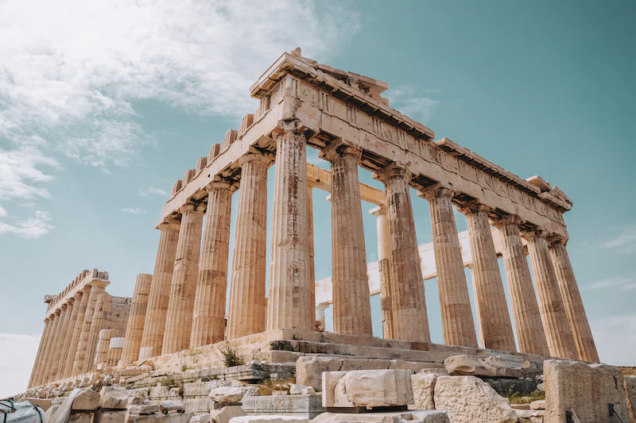

From Crete to Athens, Greece has a vibrant food scene with a wide variety of restaurants to choose from. A food tour is a great way to try a variety of traditional Greek dishes.
Athens has a number of local markets where you can buy fresh produce, meat, seafood, and other local products. It is a great way to experience the local culture and to get some souvenirs.
Take a trippin cooking class: If you want to learn how to cook traditional Greek dishes, take a cooking class.
Mount Penteli is a mountain located just outside of Athens. It is a popular hiking destination with stunning views of the city.
Plaka is the oldest neighborhood in Athens and is home to a variety of shops, restaurants, and cafes.
It is a great place to wander around and explore the city.
Home to a collection of artifacts from the Acropolis. It is a must-visit for anyone interested in ancient Greek history and culture.